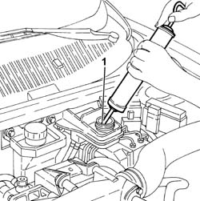
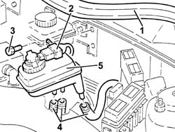

3330C30 brake fluid reservoir - r + r and wash inside
- Path
- Procedures > 33 BRAKING SYSTEM > 3330 HYDRAULIC BRAKING SYSTEM > 3330C brake pump, reservoir and load proportioning valve > 3330C30 brake fluid reservoir - r + r and wash inside
- Kind
- repair procedure (removal / refitting; the operation number is the code)
- Applies to
- all engines; all production periods
- Interactive page
- https://sloeber94.github.io/elrnDB-a156/en/#/3238068
Applies to: all engines; all production periods
 Removing
Removing
 Refitting
RefittingDisconnect the battery negative (-) terminal.
 | Name | Connector |
|---|---|---|
- | Battery |
1. Drain the brake fluid from the reservoir using a suitable syringe.

Applies to: all engines; all production periods
1. Remove the engine bulkhead seal.
2. Disconnect the electrical connection from the brake fluid level sensor.
| Name | Connector |
|---|---|---|
- | Brake fluid level sensor (switch) |
3. Undo the bolts securing the brake fluid reservoir to the engine bulkhead.
4. Raise the brake fluid reservoir as much as necessary to disconnect the relevant pipes.
5. Remove the brake fluid reservoir.

Applies to: all engines; all production periods
Refitting
RemovingWash the inside of the brake fluid reservoir.
Refit the brake fluid reservoir in its seating and connect the relevant pipes.
Fix the brake fluid reservoir to the engine bulkhead using the bolts.
Connect the electrical connection to the brake fluid level sensor.
| Name | Connector |
|---|---|---|
- | Brake fluid level sensor (switch) |
Place the engine bulkhead seal back in its seating.
Connect the negative (-) battery terminal.
| Name | Connector |
|---|---|---|
- | Battery |
Topics linked from this page (3)
- 3330A10 BRAKE FLUID - Check level and top up, if necessary.
- A1 Battery
- K25 Brake fluid level sensor (switch)